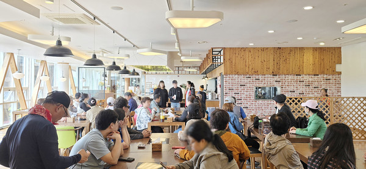

1F · STEAK
도쿄스테이크
일본식 스테이크·덮밥·파스타. 넓은 창과 함께하는 식사 공간입니다.
10:00–20:00월 휴무

Food & Beverage
식음
1층 도쿄스테이크·국수나무, 2층 카페 트로이·한정식 여목. 메뉴·가격은 매장 안내에 따릅니다.
1F · STEAK
일본식 스테이크·덮밥·파스타. 넓은 창과 함께하는 식사 공간입니다.

1F · NOODLES
동서양 국수와 든든한 한 끼. 아이와 함께하는 주먹밥 체험 메뉴도 있습니다.

2F · CAFE
목마와 Troy 이름을 이은 카페. 커피·에이드·디저트로 여유를 남기세요.

2F · KOREAN
정갈한 한정식 코스. 가족 모임과 손님 접대에 어울립니다.
식사 후 애견운동장
반려동물 운동장 무료 이용